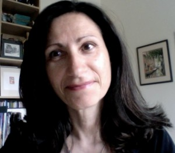
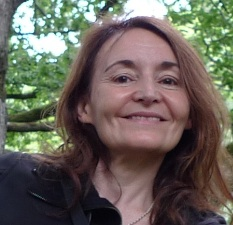
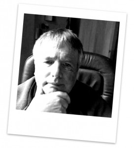
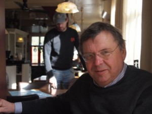
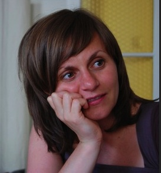

Ros Asher
Ros works with organisations to develop creative approaches that can improve learning, performance and life chances. Before becoming free-lance, Ros was an Education Director and Project Director at Partnerships for Schools, the company set up to deliver the UK’s Building Schools for The Future programme, where she led the ‘Leading Learning’ programme. She has been a Children’s Services Improvement Adviser at the Department for Education, a Local Authority Chief Officer with responsibility for school improvement, development, inclusion and arts services, and an education adviser in four local authorities. Extensive teaching experience covers a range of schools, colleges, higher education and other education settings. She has worked with public, private, third sector and education industry partners, contributed to BBC and Channel 4 music education projects, and been a visiting university lecturer and external examiner.
{kind=link}
Contributions to conferences and training in Europe and the USA include sessions on leadership, creativity, change management, improving learning, curriculum development, music and the arts. Ros’s work with voluntary, community and charitable organisations focuses on increasing educational impact. She was Chair of Trustees for WebPlay and is a Trustee with icould, both organisations incorporating innovative use of ICT to inspire learners. She was a founder Trustee of ‘Music for Life’ a programme now run by the Wigmore Hall and Dementia UK, is a Trustee of the New Mozart Orchestra, and a member of the Cultural Learning Alliance steering group, which champions the power of high quality arts and cultural education for all learners.
Patricia Charlton
Dr. Patricia Charlton is a researcher on artificial intelligence, cognitive science and technology-enhanced learning. She is the author of several papers on artificial intelligence, education, ubiquitous computing and intelligent context-aware designs.
She is currently working with teachers, students, researchers and industry to bring a broader understanding of the importance in how and why to teach and learn about computational thinking, computer science and technology enhanced learning. She also continues her research development into the design of knowledge co-construction systems using computational reflection and meta-level inferencing techniques thus enabling learning analytics in context. Her key interests are in creativity and deep learning that brings both the science and arts together.
{kind=link}
Patricia is a part-time researcher at the Knowledge Lab (LKL), Institute of Education, University of London. She heads the What the Research Says seminars for education and industry partnership at LKL with MirandaNet support.
Adrian Hall
With a thorough understanding of the way educational and broader government policy works Adrian is an international keynote speaker. He has been a policy maker in the UK Government and is a member of Project Inkwell a US Think Tank looking at 1:1 access for students.
Skills include:
· Wide ranging experience on the development of government level policy and strategy, as well as business strategy.
· Considerable writing experience from policy documents, parliamentary questions and presentations to writing for publication.
· Ability to conceptualise and develop innovative market-changing products and services
· Capacity to build relationships across government and the commercial sector
· International company representation and business development
· Identifying new business and policy opportunities
Francis Howlett

MirandaNet Web Editor
Francis Howlett has been the MirandaNet Web Editor for over fifteen years. He has a background in Education as a Modern Foreign Languages and later Information Technology teacher, followed by a spell as an Advisory Teacher and then managing projects at NCET/Becta. Since leaving Becta he has worked freelance for a number of educational organisations. Much of his current work is divided between maintaining and developing web sites, and translating learned documents and press releases into English.
Read more here
Theo Kuechel
Theo Kuechel is a MirandaNet Senior Fellow developing MirandaNet’s social media presence and the MirandaMod events. He has been a partner on national and international projects on digital content and video He is a consultant and researcher having with experience of developing and teaching courses in digital media at the University of Hull and NAACE. He has been a partner on national and international projects on digital content and video with JISC, QIA and the EdutubePlus project funded under EU eContentplus. Within the UK he has undertaken research for BECTA and VITAL, (Open University), and the University of Hull. Theo was recently invited to work in Qatar advising ICT Qatar on Qatar’s strategy for digital content. Currently, Theo is working in the EU LLL HandsOn project in which MirandaNet is a partner.
{kind=link}
Theo’s research covers digital literacies, social media and learning ecosystems. His expertise is harnessing (Open) digital content, archives and resources for learning, OERs and online video in education. He has specialist knowledge of Copyright in education including Creative Commons and he has given presentations and workshops on these topics in UK, Ireland, Czech Republic, France, Austria, United Sates, Romania, Belgium, Qatar and Greece.
Jan Lepeltak
Jan was was a senior curriculum developer for ICT at the National Institute for Curriculum Development SLO in Enschede and a professor at the NHL-University of applied science in Leeuwarden (the Netherlands) at the Institute for Education and Communication. For almost 20 years he was editor-in-chief of a Dutch monthly educational magazine on educational technology (COS) and still writes about ICT in several magazines and national newspapers. In 2013 he was a member of the National Organizing Committee of the WorldRoboCup Junior games 2013 in Eindhoven. He is also a representative of NGI (the Netherlands Association for Informatics) in the EU education network CEPIS in Brussels. He is a Senior MirandaNet Fellow and has participated since 1992 in the network. He gave in 2014 several keynotes in conferences about social media, coding and education.
As a freelance consultant Jan continues to do research and development in new pedagogies and ICT. His projects include: e-learning; using social media in small schools; action research; and language development enhanced with ICT. He works as an independent consultant and is founder of LearningFocus.
{kind=link}
Ian Lynch
Ian Lynch, is Senior MirandaNet Fellow, and has contributed his wide experience of project administration as well as improving the accreditation available to teachers who undertake MirandaNet projects. Ian Lynch is responsible for the development of a governance policy for the HandsOn project and the sustainability strategy as well as assisting with links to EU policy and personnel and financial management. He uses his extensive networks in order to disseminate the project.
{kind=link}
Ian has experience as an assessor of the national professional qualification for headteachers, as a Registered Inspector (OFSTED) and Chief Assessor at The Learning Machine Ltd (Ofqual accredited awarding organisation) He is a member of the Senior Leadership Team that set up the first UK City Technology College, government flagship school for technology.
Ian has successfully managed two LDV TOI projects each scoring 80% in final evaluation. Contributed to writing proposals for 6 successful TOI project applications, experience with two Comenius and one Grundtvig projects. His specific expertise is in curriculum design, assessment, EQF, ECVET, EQARF, Open Source Software communities and business models to support OER. He has won DTi Smart Award for software development and Midlands Small Business of the Year Award with commendation for financial management.
Ian designed the assessment structure for the ModBac and provided the certification support technology for the new Duke of York’s Award for STEM subjects.
Christina Preston
 Christina has been at the forefront of education and technology for over 25 years. She started MirandaNet in 1992 to research and advise clients in the impact of technology and learning. The company has become a global thought leader with over 1,000 members in 80 countries. Knowledge sharing and creation and managing the change process to ensure impact is at the core of MirandaNet’s philosophy. A full programme of events is held in partnership with the London Knowledge Lab, Institute of Education. As Professor of Educational Innovation, Christina also advises the Future Learning Centre at the University of Bedfordshire.
Christina has been at the forefront of education and technology for over 25 years. She started MirandaNet in 1992 to research and advise clients in the impact of technology and learning. The company has become a global thought leader with over 1,000 members in 80 countries. Knowledge sharing and creation and managing the change process to ensure impact is at the core of MirandaNet’s philosophy. A full programme of events is held in partnership with the London Knowledge Lab, Institute of Education. As Professor of Educational Innovation, Christina also advises the Future Learning Centre at the University of Bedfordshire.
She is also the Chair of Trustees of World Ecitizens charity established by the MirandaNet Fellows in 2002 after the events of 9/11 in New York. This charity provides a web space where learners across the world can publish for an international audience: for more information.
Joanna Wild
Joanna Wild is digital experience and evaluation consultant and researcher. Currently she works on two projects: 1) ESRC- KEO funded ‘Building Community Knowledge‘ project led by Diana Laurillard from the Institute of Education. University of London, and 2) JISC-funded Digital Student study.
{kind=link}
From 2010 to 2013 Joanna was researcher attached to the Academic IT Education Enhancement Team at the University of Oxford. She has worked in a number of JISC-, HEA-, and ESRC-funded projects in the field of TEL, specialising in digital experience research and evaluation, learning design (LDSE project), Open Educational Resources (OER Impact Study), Open Practice (OER Engagement Study) and Open Access (Open Access at Oxford).
Before joining Academic IT Services she worked first as e-learning course designer and staff developer at the Centre of e-Learning of AGH-University of Science and Technology in Krakow, and then as scientific project manager and educational researcher in the Technology & Knowlege Unit at the Centre for Social Innovation researching in several TEL projects funded by EC FP7 and Lifelong Learning Programme. Joanna tweets as @askawild
Dr Sarah Younie
Dr Sarah Younie, Research and Innovation Director, is a MirandaNet Senior Fellow and has bought her significant research experience to MirandaNet Projects over many years. She is currently working on several research project with MirandaNet associates including the EU LLL HandsOn project.
{kind=link}
Sarah has been involved in international research on educational technologies and teaching for twenty five years. She has been involved in the use of digital technologies in educational settings for UNESCO, the EU, UK Government Agencies, Local Authorities, educational charities and other funders. She has worked as a teacher and researcher in secondary schools, universities and as UK Chair of the national subject association of IT in Teacher Education (ITTE) she has conducted research, including gathering evidence for the Parliamentary Select Committee Inquiry into Education.
Sarah is also a visiting Senior Research Fellow at University of Bedfordshire and Principal Lecturer at De Montfort University, where she is Programme leader for the MA in Education Practice. She has published widely on educational technologies and is the Associate Editor-in-Chief for the international Journal of Technology, Pedagogy and Education. Dr Younie’s latest book published by the Open University Press is entitled ‘Teaching with Technology: the essential guide’. Dr Younie is afounder member of MESH (Mapping Education Specialist knowhow) and is the Editor-in-Chief of the MESHguides for ICT.
Sanaa Nusrat
Personal assistant: organising and running meetings and events, managing the accounts, liaising between members of staff and clients, data collection for research projects, dealing with the unexpected.
The Consultancy Team
The MirandaNet consultancy can call on the skills and talents of our 1,00 plus members from 80 countries who work as full time or part-time consultants on specific projects. Practising teachers and senior managers also join MirandaNet projects as co-researchers and/or action researchers as means of gaining up to date professional development that informs their current practices. The presence of practising professionals ensure the authenticity of MirandaNet research findings and case studies that are all available to the wider profession. The MirandaNet consultancy team, drawn from MirandaNet Fellows, have worked together on many research, development and dissemination projects since 1992 funded by companies, international government agencies, professional organisations and charities.We also have many Senior Fellows, often independent consultants, who join us in projects that are relevant to their interests. The list is here.
The advisers
MirandaNet can also draw on members who are internationally expert. Their advise is greatly valued. The list is here.